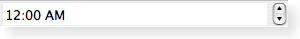

QTimeEdit ¶
Detailed Description ¶
The PySide.QtGui.QTimeEdit class provides a widget for editing times based on the PySide.QtGui.QDateTimeEdit widget.
Many of the properties and functions provided by PySide.QtGui.QTimeEdit are implemented in PySide.QtGui.QDateTimeEdit . The following properties are most relevant to users of this class:
- PySide.QtGui.QDateTimeEdit.time() holds the date displayed by the widget.
- PySide.QtGui.QDateTimeEdit.minimumTime() defines the minimum (earliest) time that can be set by the user.
- PySide.QtGui.QDateTimeEdit.maximumTime() defines the maximum (latest) time that can be set by the user.
- PySide.QtGui.QDateTimeEdit.displayFormat() contains a string that is used to format the time displayed in the widget.
A time editing widget shown in the Windows XP widget style .  A time editing widget shown in the Macintosh widget style . A time editing widget shown in the Plastique widget style .
- class PySide.QtGui. QTimeEdit ( [ parent=None ] ) ¶
- class PySide.QtGui. QTimeEdit ( time [ , parent=None ] )
-
Parameters: - parent – PySide.QtGui.QWidget
- time – PySide.QtCore.QTime
Constructs an empty time editor with a parent .
Constructs an empty time editor with a parent . The time is set to time .